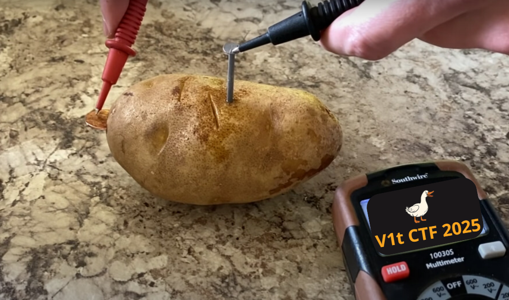
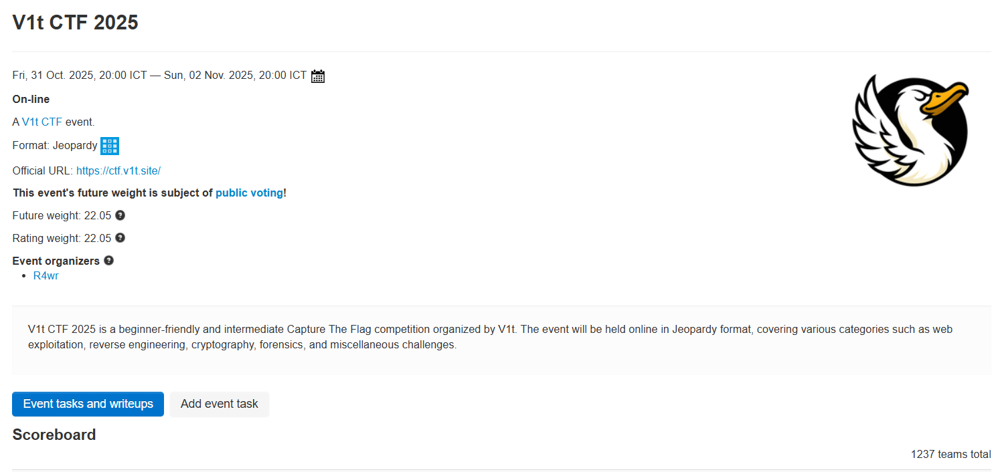
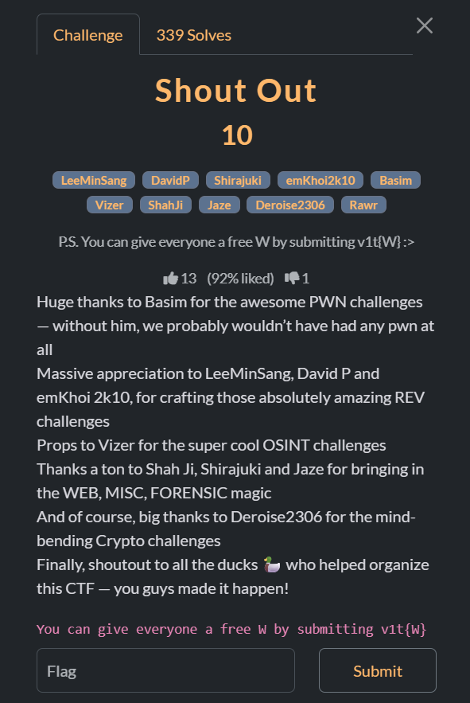

Idea
Honestly, there wasn’t any fancy or romantic reason behind it. It was just a random thought like:
“Why don’t I create a v1t CTF about ducks?”
And then my brain went: fuck it, I’m gonna do it anyway.
Getting Started
Things were actually pretty hard at the beginning because I had never asked for sponsorship before, so I had zero experience. I started by googling “CTF sponsorship” and reached out to Google CTF first — and of course, they rejected us immediately. Their reply email was even kinda sarcastic.

I didn’t give up though. If nobody wanted to sponsor us, I’d just rent servers myself and make a duck CTF anyway ;-;.
But I’m a broke-ass duck, so I could only afford potato-tier servers.
Preparation
Even though the infrastructure was absolute trash, I struggled my way through configuring and setting up the server. Still, I wanted my teammates to feel safe focusing on making challenges — I’d carry everything else.
My mindset has always been:
“You don’t mature just by getting older. You mature when you’re able to handle more pressure and stress.”
After finishing the server setup, CTFtime finally approved our event. I was really happy about that — it felt like a small signal that helped reduce my stress a bit.
During the Event
The server was trash. Our team wasn’t even representing any university, we were pretty much outlaws, so I didn’t expect many participants.
But holy moly — somehow there were more than 1000 teams.

When the event started, the incoming traffic was absolutely insane. I had already prepared for the worst-case scenario: the server crashing. But it didn’t crash — yayyyy!
It was just a bit slow.
Even though people complained a lot about the slow infrastructure (which honestly made me kinda sad), for me, having a potato server survive that many teams without dying was already a huge win.
And since the server was slow, I guess some teams probably gave up — which ironically helped keep the server alive. So yeah… it is what it is, hehe.
Ending
Even though this CTF was super amateur, I still tried to make certificates for participants and say thank you to all the duck friends who helped make V1t CTF 2025 a huge success.

Love you all very much, my fellow ducks 🦆